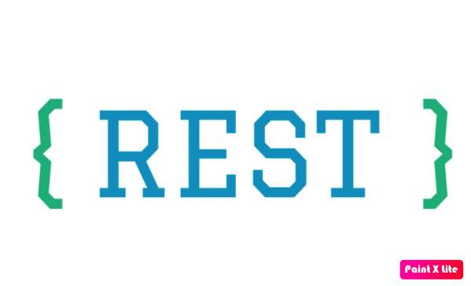

The RSS people in my school group are real hardcore, our group is only 10% to them. When we have to deal with these types of people, we must not develop dislike or hatred towards them, this is the key to keep our mind protected. When answering them we cannot be rational, we have to use really sharp and strong phrases, and also take time to respond. we must respond with the same tone as they do, we have to see the spirit (ideology they believe in) behind the person and not take their words personal. When we write back, we have to attack the spirit rather than the person itself. I was very much tempted to join the conversation but came in late. The Bible says you have to destroy the enemy (ideology or spirit) completely or it will destroy you.
Numbers 33:51-56
51"Speak to the Israelites and say to them: 'When you cross the Jordan into Canaan,
52drive out all the inhabitants of the land before you. Destroy all their carved images and their cast idols, and demolish all their high places.
53Take possession of the land and settle in it, for I have given you the land to possess.
54Distribute the land by lot, according to your clans. To a larger group give a larger inheritance, and to a smaller group a smaller one. Whatever falls to them by lot will be theirs. Distribute it according to your ancestral tribes.
55"'But if you do not drive out the inhabitants of the land, those you allow to remain will become barbs in your eyes and thorns in your sides. They will give you trouble in the land where you will live. 56And then I will do to you what I plan to do to them.'"
The Church should had destroyed all ideologies against Christianity when they had a chance, now it will be a tough battle, any way I think it is good you have come out of the group and I also have decided not to respond much and take some rest. YBK has made me the admin of country group so tell me when you want to be back. Yesterday I had some quality time so I learned to host a web page !! social distancing from whats app really works.
